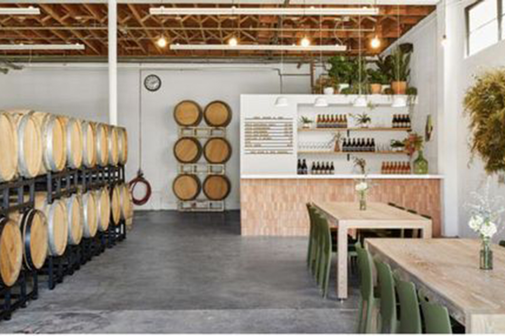
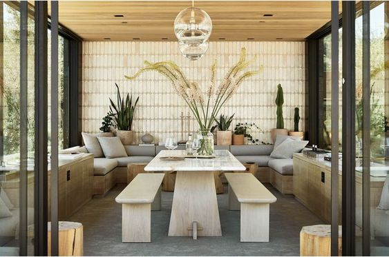
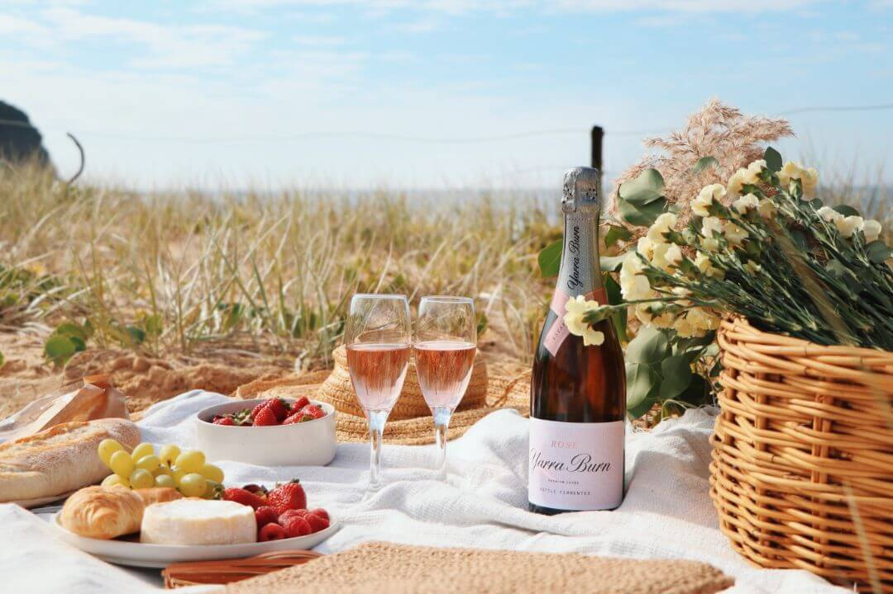
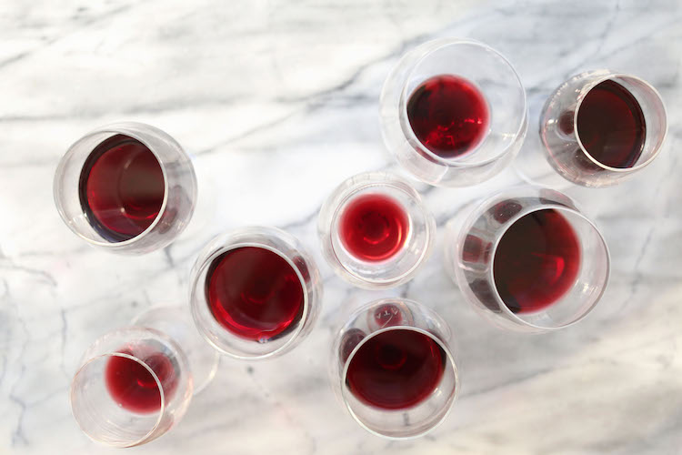
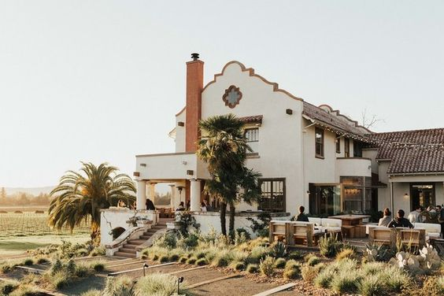
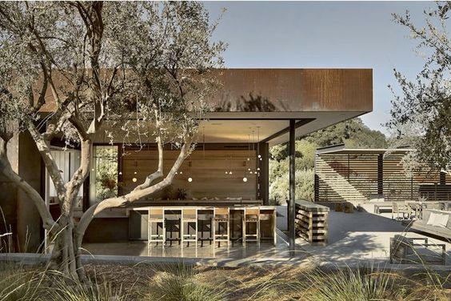
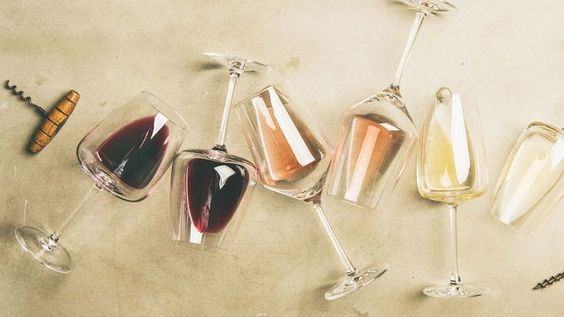
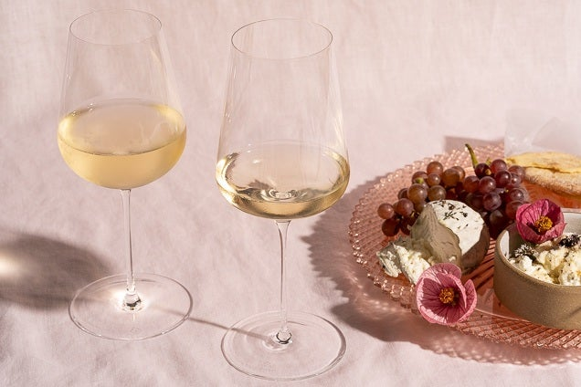

The Vine
The Wine
The Winery
Photo Gallery
Contact
Wine Photography

Barrel tasting experience

Booker vineyards

Some tasty rosé at a picnic

Spanish red wines

Winery located in the Napa Valley

Paso Robles modern vineyard

Try a variety of wines

The perfect wine and cheese pairing